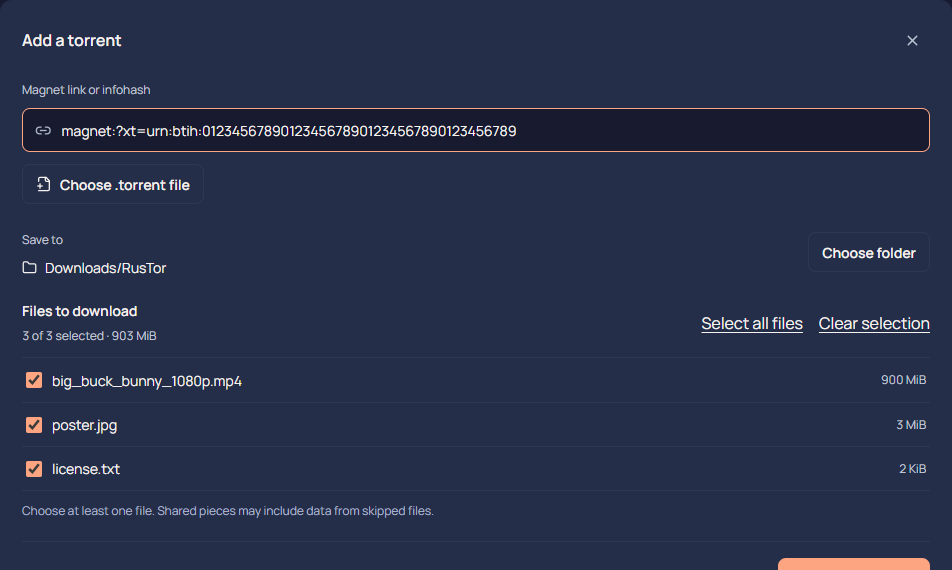
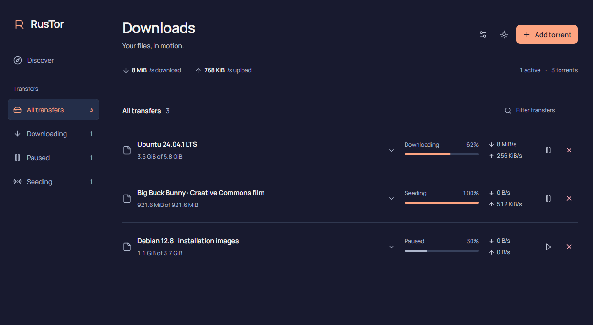
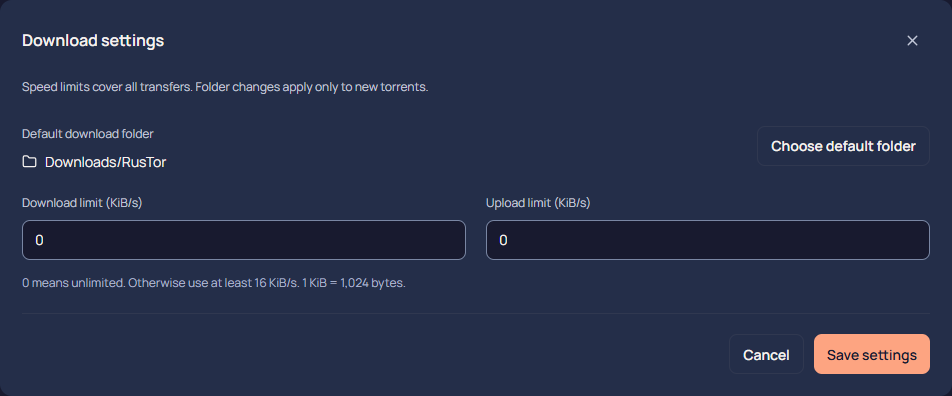
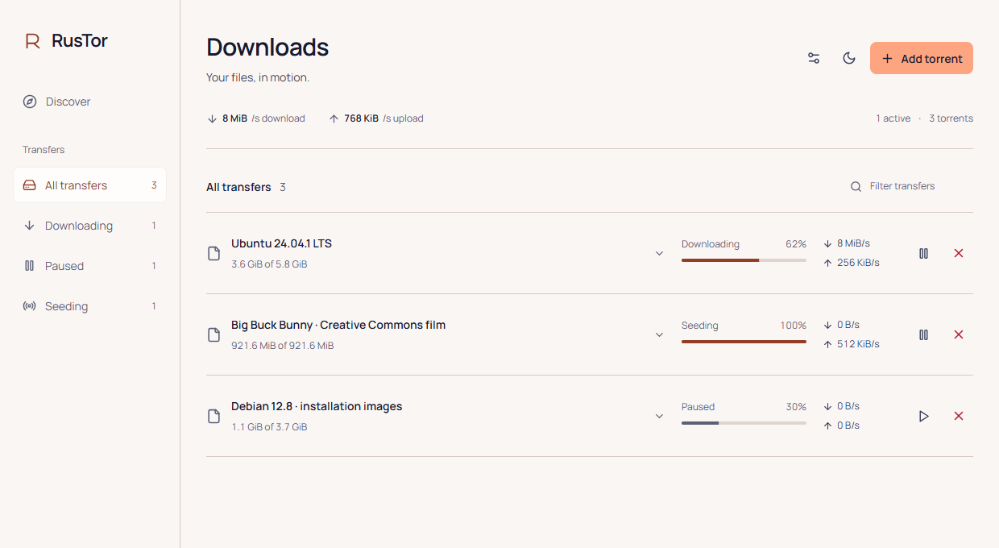

Just the files you want.
Open a magnet or torrent, see what’s inside, and choose your files and folder before the download begins.

A desktop torrent client with built-in search, file selection and a Rust engine. Everything you need to get your files moving.
Download RusTorFree to use. Open source. Yours to explore.

From the first search to the last piece, the choices stay with you.
Open a magnet or torrent, see what’s inside, and choose your files and folder before the download begins.

Give uploads and downloads a speed limit. Pause, resume, or stop a torrent while keeping your files.

Switch between navy and peach or a warm light theme. RusTor remembers your preference.

Find your next download in Discover. Browse Movies, TV, Games and Anime, then bring your selection straight into Downloads.
Choose your system and get the app. No developer tools needed.
See the available version on GitHub.
Choose a package for your system from GitHub Releases.
Preview packages are unsigned. Windows and macOS may show a security warning. Linux and macOS desktop checks are still in progress.
Keep up with what’s new, or find the version you came for. Downloads are hosted on GitHub.
A small app, with a few straightforward answers.
Yes. RusTor’s original code is open source under the MIT License. You can use it, read the code, and contribute on GitHub.
Preview packages are available for Windows x64, Linux x64, and Macs with Apple Silicon or Intel processors. Linux and macOS installation and desktop behavior are not yet fully validated.
The × control stops downloading or seeding and removes the torrent from your saved session. Complete and partial files remain on disk.
RusTor saves your torrents, destinations and file selections. When you reopen it, it restores the session and checks existing data before continuing. Large downloads may take a while to recheck.
No. Closing RusTor stops downloading and seeding. There is no background tray service.
These preview builds are unsigned, and macOS notarization is not configured. Check the release notes and SHA256SUMS before installing. Download only from this project’s GitHub releases.
No. BitTorrent peers can see your IP address. RusTor does not include a VPN or anonymous routing. Share only content you have permission to distribute.
RusTor’s search behavior draws on Torlink. Results depend on external source availability; metadata can be missing or up to five minutes old. v2-only torrents are currently unsupported.